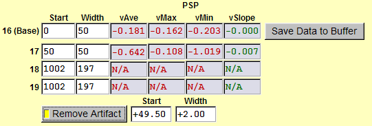

|
To average voltage data from
all records, which match the setting file "VSD-100b.set" and are in the data set
from record number 1 to 100, follow these steps. (1) Load "VSD-100b.set". (2) Check "Setting Match Check". (3) Set "First Rec." to 1 and "Last Rec." to 100. (4) Check "Show" and "Active". (5) Click "PSP -> Save Data to Buffer". In this example, there are four matched files and "4" is displayed in "NumRec". The average voltage trace is displayed in the electrophysiology window as a green trace. In the "PSP" tab, the average voltage, maximum voltage, minimum voltage, and slope of the trace from 0 to 50 ms are displayed in measurement #16. The slope is calculated by a linear fit to the data in the period. Measurement #17 displays the same characteristics in the period from 50 to 100 ms. This data is a field potential recording. You can see large stimulation artifacts in front of each response. To measure the ampligude of the response, we need to remove the artifacts and calculate the difference between the minimum in the period from 50 to 100 ms and the average in the period from 0 to 50 ms. |
|
| To move stimulation artifacts, set the time window of the first artifact. In this example, the "Start" is 49.50 ms and the "Width" is 2.00 ms. Check "Remove Artifact" and you will see the stimulation artifacts are removed. In addition, the minimum in the period from 50 to 100 ms is "-1.019" mV, which is the correct measurement. |
 |
| To measure the amplitude and the initial slope of the first response, set the "Start" and "Width" in measurement #18 to "53" and "6", and set the "Start" and "Width" in measurement #19 to "53.5" and "1". The average voltage, maximaum voltage, minimum voltage, and the slope in the periods from 53 to 59 ms and from 53.5 to 54.5 ms are displayed. The the amplitude of the first response is vAve(#16) - vMin(#18). The initial slope of the first response is -0.287 mV/ms. |
|